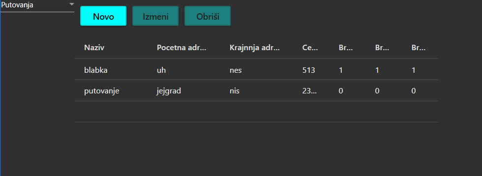
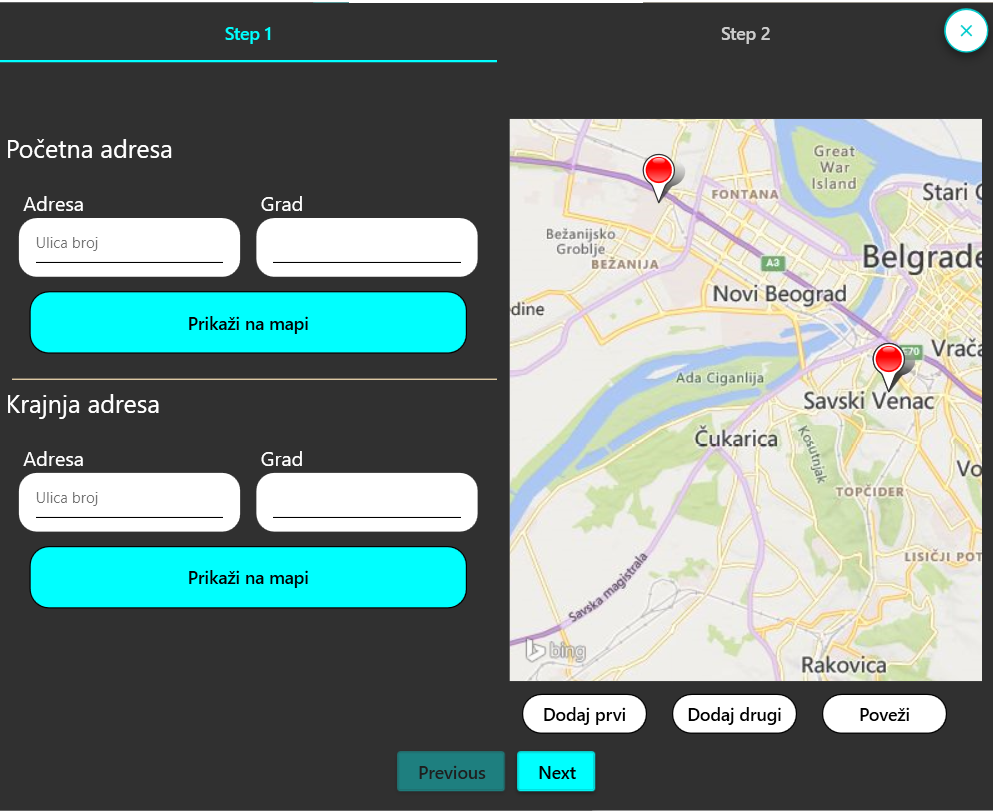
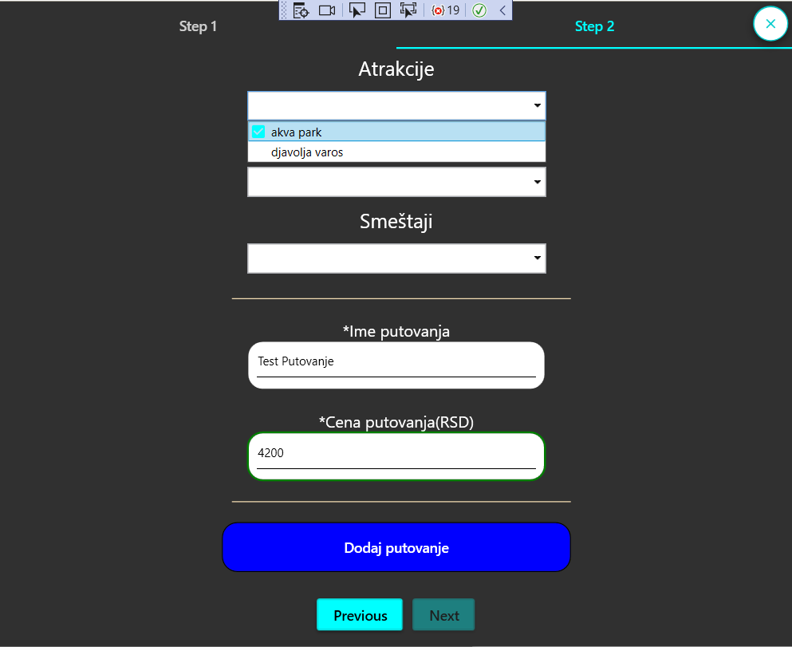
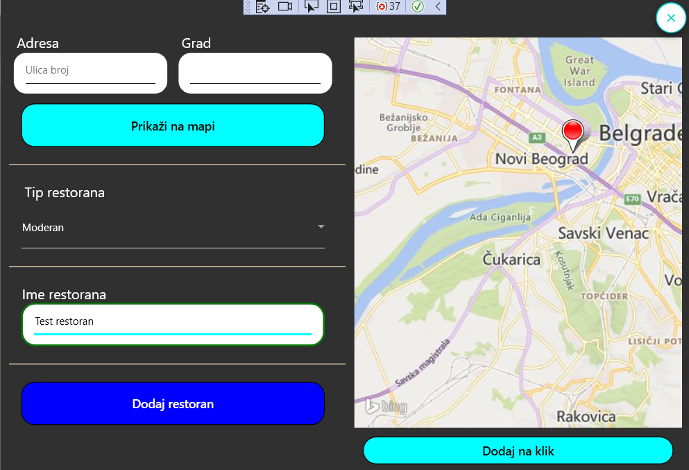

Pomoc za agenta
Sadrzaj:
Terminologija
Putovanje: putovanje je ono sto mi prodajemo,kompletan turisticki paket,putovanje se sastoji od polazne tacke, odredista, atrakcija, restorana i smestaja
Atrakcija: atrakcija je ono sto putnici zele da vide na putovanju, ima naziv, adresu i tip Tipovi Atrakcije
Smestaj: za putovanja koja duze traju neophodno je obezbediti smestaj gde ce putnici prenociti, ima naziv, adresu i tip Tipovi Smestaj
Restoran: restorani su mesta gde se sluzi hrana i pice, putnicima je potrebno obezbediti i to, ima naziv, adresu i tip Tipovi Restoran
Tipovi Atrakcija:
- Prirodna, ova atrakcija se nalazi u prirodi i predstavlja cudo prirode, park prirode ili nacionalni park Ulaznice, ako ih ima, su pokrivene cenom putovanja
- Verska, ova atrakcija je verski objekat poput crkve ili manastira Ulaznice, ako ih ima, su pokrivene cenom putovanja
- Zabavna, ova atrakcija je zabavnog karaktera, predstavlja zooloske vrtove, akva parkove, luna parkove i slicno Ulaznice su pokrivene cenom putovanja
- Kulturna, ova atrakcija je kulturnog karaktera, predstavlja muzeje, spomenike, pozorista i slicno Ulaznice su pokrivene cenom putovanja
Tipovi smestaja:
- Hotel, hotel je ustanova namenjena pružanju usluga najčešće kratkotrajnog smeštaja i prehrane gostiju, korisnika usluge. Svi troskovi u vezi sa hotelima su ukljuceni u cenu putovanja
- Motel, iste namene kao i hotel, samo je razlika sto su moteli manji, manje luksuzni i na zabacenijim lokacijama Svi troskovi u vezi sa motelima su ukljuceni u cenu putovanja
- Kamp mesto, mesto gde se postavljaju satori i kamp prikolice da bi se proveo dan u prirodi. Kamp satori za nocenje su obezbedjeni
Tipovi restorana:
- Nacionalna kuhinja, restoran se prevashodno bavi nasom srpskom hranom, ocekujte sve domace specijalitete Cena obroka je ukljucena u cenu putovanja
- Moderna kuhinja, restoran se bavi svetskom gastronomijom, ocekujte sve savremene svetske specijalitete Cena obroka ukljucena u cenu putovanja
- Brza hrana, restoran se bavi pravljenjem brze hrane, pljeskavice, hamburgeri i slicno Cena obroka NIJE ukljucena u cenu putovanja
Pomoc pri koriscenju
Nakon sto ste se prijavili sa agentskim nalogom videcete stranicu za agenta, u gornjem levom uglu je padajuci meni gde mozete da birate sta se prikazuje, podrazumevano prikazuje se tabela sa svim putovanjima
Tabela Putovanja

Tabelarni prikaz svih putovanja koja postoje u sistemu.Iznad tabele nalaze se 3 dugmeta: "Novo", "Izmeni", "Obrisi"
 
Pravilno popunjena forma za unos i izmenu putovanja. Dodavanje adrese preko mape je preporuceno, 1. dodaj prvi, 2. dodaj drugi, 3. povezi. Atrakcije, Restorani, Smestaj se odabiru iz padajuceg menija klikom na znak otkaceno.
Tabela Atrakcije, Restorani, Smestaj
Tabele su sasvim slicne jedna drugoj, naziv, adresa i odgovarajuca vrsta
I pravilno popunjena forma za unos i izmene, na primeru restorana

Precice na tastaturi
Kad ste pozicionirani u odgovarajucu tabelu, potrebno je da imate fokus na tabeli, mozete koristiti precice na tastaturi za brzi pristup formama
- Ctrl+N - Dodavanje novog
- Ctrl+E - Izmena selektovanog reda u tabeli, moguce je selektovati vise redova
- Delete - Brisanje selektovanog reda u tabeli, moguce je selektovati vise redova
Pregled za mesec
Prikazano je ko je kad kupio koje putovanje u proteklih 30 dana, dan od kojeg se gleda proteklih 30 se bira iz odabiraca datuma iznad tabele. Podrazumevano od danas.
Pregled po putovanju
Pregled ko je kad kupio jedno odredjeno putovanje, putovanja se biraju iz pretrazivog padajuceg menija iznad tabele. Podrazumevano je da nijedno putovanje nije odabrano, te se vide sva kupljena putovanja